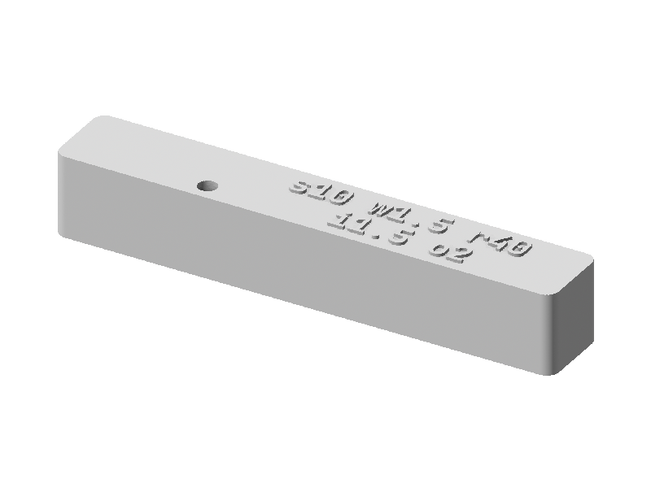
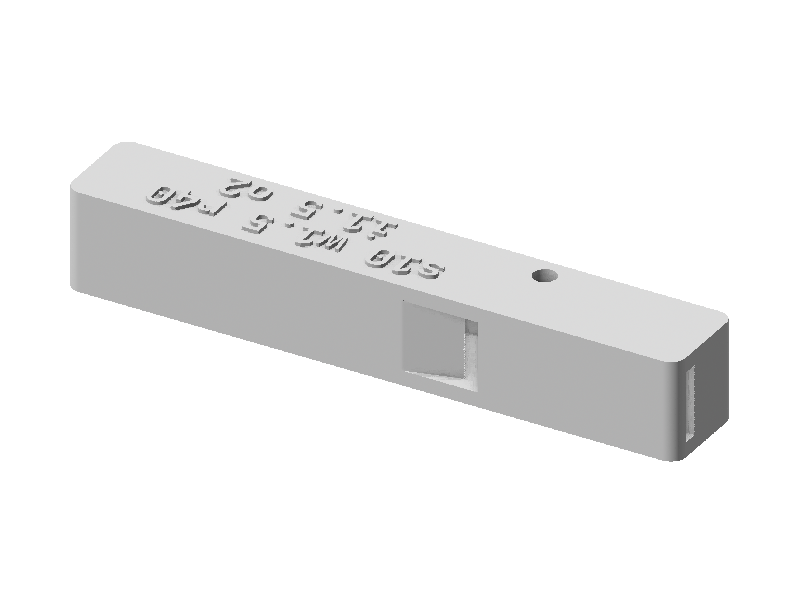

whistle
Drafted with AI, not yet reviewed
Whistle: a rounded box with a resonator, an air inlet, an outlet in front of the cutting edge and a lanyard hole, its sizes printed on top; with an open end, an L-shaped slider tunes it.
Ported from src/sound/whistle.scad. What differs, and why:
- PART “cut” draws the whistle and the slider, to be sliced across Z at 0 in the viewer (d, then 7), where OpenSCAD’s projection(cut = true) draws the slice itself.
- The label’s font is JetBrainsMono Nerd Font, JetBrains Mono with Nerd Fonts’ icons added, which has to be installed.
- minkowski() with a cylinder, rounden_xy, is a rounded rectangle extruded: the same solid, its corners round rather than 24-gons.
- The slider’s offset(r) offset(-2r) offset(r) closes and opens two strips: here strokes, round-ended, joined by union_round.
Compared with the original: within 0.016 mm, the label left out.


Files
Source
// SPDX-License-Identifier: 0BSD // // Whistle: a rounded box with a resonator, an air inlet, an outlet in front // of the cutting edge and a lanyard hole, its sizes printed on top; with an // open end, an L-shaped slider tunes it. // // Ported from `src/sound/whistle.scad`. What differs, and why: // // - PART "cut" draws the whistle and the slider, to be sliced across Z // at 0 in the viewer (d, then 7), where OpenSCAD's projection(cut = true) // draws the slice itself. // - The label's font is JetBrainsMono Nerd Font, JetBrains Mono with Nerd // Fonts' icons added, which has to be installed. // - minkowski() with a cylinder, rounden_xy, is a rounded rectangle // extruded: the same solid, its corners round rather than 24-gons. // - The slider's offset(r) offset(-2r) offset(r) closes and opens two // strips: here strokes, round-ended, joined by union_round. // // Compared with the original: within 0.016 mm, the label left out. // --- Parameters --- const PART = "cut"; // "cut", "whistle" or "slider" const TIP = 20.0; // length of the tip that touches the mouth const SIDE = 10.0; // side of the whistle const WALL = 1.5; // wall thickness const INLET = 1.5; // size of the air inlet const OUTLET = 2.0; // size of the air outlet in front of the cutting edge const RESONATOR = 40.0; // length of the resonator const OPEN = false; // whether the end is open const NOZ = 0.4; // the nozzle, the label's height const L = RESONATOR + TIP + WALL; // --- Whistle --- fn base() { let reduction = if global::OPEN { global::WALL } else { 0.0 }; rect([global::L - reduction, global::SIDE], #{round: global::WALL}) .extrude(global::SIDE) .move([-(global::TIP - global::WALL) / 2 - reduction / 2, 0, 0]) } fn resonator() { let extension = if global::OPEN { global::WALL } else { 0.0 }; let inner = global::SIDE - global::WALL * 2; rect([global::RESONATOR + extension, inner], #{round: global::WALL / 2}) .extrude(inner) .move([extension / 2, 0, 0]) } fn inlet() { cuboid([global::L, global::INLET, global::SIDE - global::WALL * 2]) .move([-global::L / 2, global::SIDE / 2 - global::INLET / 2 - global::WALL, 0]) } // The cutting edge's slope, 15 degrees, and the gap in front of it. fn outlet() { let a = 15.0; let h = global::SIDE - global::WALL * 2; let edge = cuboid([global::WALL / sind(a), global::WALL / cosd(a), h], #{anchor: [-1, -1, 0]}) .rotate_z(a); let gap = cuboid([global::OUTLET, global::SIDE / 2, h], #{anchor: [1, -1, 0]}); union(edge, gap).move([-global::RESONATOR / 2 + global::OUTLET, global::SIDE / 2 - global::WALL, 0]) } fn hole() { cylinder(global::WALL * 3 / 4, global::SIDE + 1) .move([-global::RESONATOR / 2 - global::WALL * 3 / 2, -global::SIDE / 2 + global::WALL * 3 / 2, 0]) } // A number as OpenSCAD's str() writes it: 10, not 10.0. fn str(v) { if v == v.floor() { `${v.to_int()}` } else { `${v}` } } fn info() { let font = #{size: 3, font: "JetBrainsMono Nerd Font:style=Bold", halign: "center"}; let top = text(`s${str(global::SIDE)} w${str(global::WALL)} r${str(global::RESONATOR)}`, font + #{valign: "bottom"}); let bottom = text(` i${str(global::INLET)} o${str(global::OUTLET)}`, font + #{valign: "top"}); union(top.move([0, 0.5]), bottom.move([0, -0.5])) .extrude([global::SIDE / 2, global::SIDE / 2 + global::NOZ]) } fn whistle() { union(difference(base(), [resonator(), inlet(), outlet(), hole()]), info()) } // --- Slider --- // Two strips, a wall thick, opened into strokes with round ends and joined // with fillets of half a wall: the T of OpenSCAD's offsets. fn slider() { let w = global::SIDE - global::WALL * 2 - global::NOZ; let l = global::RESONATOR + 20; let r = global::WALL / 2; let profile = union_round([ stroke([[0, -w / 2 + r], [0, w / 2 - r]], global::WALL), stroke([[r, 0], [l - r, 0]], global::WALL), ], r); profile.extrude(w) .difference(cylinder(w / 4, global::WALL * 2).rotate_x(90).move([l - w * 3 / 4, 0, 0])) } if PART == "whistle" { draw(whistle()); } else if PART == "slider" { if !OPEN { throw "the slider needs OPEN"; } draw(slider()); } else { draw(whistle()); if OPEN { draw(slider()); } }